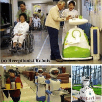
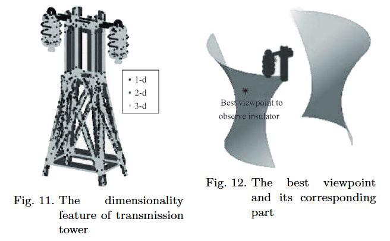

电力智能机器人工程技术研究中心|AMaze
科学研究
严谨 求实 创新
实验室环境
为了打造良好的科研环境，实验室斥资购买了大量实验设备。这些设备主要可分为四大类：1.隧道机器人模拟巡检系统；2.输电线路模拟巡检系统；3.变电站机器人模拟巡检系统；4.精度受限的无人机自主导航式室内定位系统。

实验室环境
隧道机器人模拟巡检系统
输电线路模拟巡检系统
变电站机器人模拟巡检系统

精度受限的无人机自主导航式室内定位系统
论文
Viewpoint
Optimization Method for Flying Robot Inspecting Transmission Towers Based on
Point Cloud Model
This paper presents a method to derive optimal viewpoints for flying robot based transmission tower inspection, which applies point cloud model. A safe envelope is established according to safe transmission tower inspection rules. Essential inspection factors are proposed to evaluate the quality of candidate viewpoints, which includes visibility, d...

Fast
Robot Localization Approach Based on Manifold Regularization with Sparse Area
Features
Background/Introduction Robot localization can be considered as a cognition process that takes place during a robot estimating metric coordinates with vision. It provides a natural method for revealing the true autonomy of robots. In this paper, a kernel principal component analysis (PCA)-regularized least-square algorithm for robot localization wi...

A
3D Laboratory Test-Platform for Overhead Power Line Inspection
Using unmanned aerial vehicles (UAVs) for performing automatic inspection of overhead power lines instead of foot patrols is an attractive option, since doing so is safer and have considerable cost savings, among other advantages. The purpose of this paper is to design a 3D laboratory test-platform to simulate UAVs' inspection of transmission lines...

Undelayed
Initialization Using Dual Channel Vision for Ego-Motion in Power Line
Inspection
This paper presents a novel approach to the initialization of an ego-motion estimation technique for autonomous power line inspection. Dual channel vision, consisting of an infrared and optical camera, is typically adopted during inspection. The infrared camera is far more proficient at reliably detecting heated regions of the power tower which can...

Hybrid
velocity switching and fuzzy logic control scheme for cable tunnel inspection
robot
The mass and stiffness of cantilever are neglected; thus, the robot and load can be considered as point masses and are assumed to move in a two-dimensional, x-y plane. The coordinates of the trolley and load are (x M , y M ) and (x m , y m ). Triangular membership functions are chosen for the derivative of the robot position error, swing angle, the...

Visual
Data Driven Approach for Metric Localization in Substation
To localize inspection robot in an in-service substation costs much. How to discriminate its location among highly similar scenes is the main problem of localizing robot in the substation using vision. A novel approach for visual localization using image retrieval and multi-view geometry is proposed. It is applicable for autonomous inspection of in...

A
Safe Flight Approach of the UAV in the Electrical Line Inspection
In recent years, the UAV (Unmanned Aerial Vehicle) inspection for the electrical line has received increasing attentions due to the advantages of low costs, easiness to control and flexibility. The UAV can inspect the electrical tower independently and automatically by planning the flight path. But during the inspection along the path, the UAV is e...

A
Novel Hybrid Path Planning Algorithm at Macroscopic Level for Autonomous
Climbing Robot
Conference: 2018 3rd International Conference on Robotics and Automation Engineering (ICRAE)

A
Hierarchical Algorithm Based on Density Peaks Clustering and Ant Colony
Optimization for Traveling Salesman Problem
This paper proposed a hierarchical hybrid algorithm for Traveling Salesman Problem (TSP) according to the idea of divide-and-conquer. The TSP problem is decomposed into a few subproblems with small-scale nodes by Density Peaks Clustering algorithm (DPC). Every subproblem is resolved by Ant Colony Optimization algorithm (ACO), this is the lower laye...

Failure
recovery method based on log for autonomous robotic system
Conference: 2017 International Conference on Robotics and Automation Sciences (ICRAS)
Hierarchical
detecting points path planning algorithm for climbing robot in spatial
trusses
Conference: 2017 International Conference on Robotics and Automation Sciences (ICRAS)

Improving
SPH Fluid Simulation Using Position Based Dynamics
Physically-based simulation technique has been widely used in creating astounding fluid appearances for film industries and computer games. However, stable and realistic fluid simulation based on SPH method is still challenging, as unstable solid boundary handling and numerical dissipation always plague current SPH fluid solvers. To solve these iss...

Research
on Key Technologies of Cable Tunnel Inspection Robot
2019 Chinese Automation Congress (CAC)

A
Deep Convolutional Networks for Monocular Road Segmentation
2018 Chinese Automation Congress (CAC)

Contrastive
sequential interaction network learning on co-evolving Riemannian spaces
In this paper, we for the first time study the sequential interaction network learning on co-evolving Riemannian manifolds, and present a novel CSINCERE. Concretely, we first introduce a co-evolving GNN with two-stereographic space bridged by the common Euclidean tangent space, in which we formulate the cross-space...

Edge Detection with
Transformer
Convolutional neural networks have made significant progresses in edge detection by progressively exploring the context and semantic features. However, local details are gradually suppressed with the enlarging of receptive fields. Recently, vision transformer has shown excellent capability in capturing long-range dependencies. Inspired by this, we propose a novel ...
Viewpoint
Optimization Method for Flying Robot Inspecting Transmission Towers Based on
Point Cloud Model
This paper presents a method to derive optimal viewpoints for flying robot based transmission tower inspection, which applies point cloud model. A safe envelope is established according to safe transmission tower inspection rules. Essential inspection factors are proposed to evaluate the quality of candidate viewpoints, which includes visibility...

Multi-mode
combustion process monitoring on a pulverised fuel combustion test facility
based on flame imaging and random weight network techniques
Combustion systems need to be operated under a range of different conditions to meet fluctuating energy demands. Reliable monitoring of the combustion process is crucial for combustion control and optimisation under such variable conditions. In this paper, a monitoring method for variable combustion conditions is proposed by combining digital imaging...
学术活动
This special issue features original studies on pretraining, including fundamental and cutting-edge theories and applications on language models, graphs/social networks, computer vision, knowledge graphs, and recommender systems.
基于个性化视线估计的孤独症谱系障碍儿童早期筛查方法研究
孤独症谱系障碍(ASD)是一种以社交缺陷(社会交往和互动缺陷等)和非社交缺陷(兴趣狭窄和刻板行为等)为主要特征的神经发育障碍。是全球患病人数增长最快的严重疾病之一，也是儿童青少年致残的主要因素之一。目前ASD缺乏客观的诊断依据，只能根据症状学特征、病史资料和社会功能来确定，因此不能对疾病进行及时诊断和干预，也阻碍了对疾病的深入探索。注视方向是人们在感受视觉刺激后其注意力与内心活动的真实重要表征。而孤独症儿童的行为异常(共情和系统化水平异常)与其视觉注意力模式密切相关。通过视线估计技术获取被试儿童浏览指定眼动范式时的注视方向，再利用人工智能相关技术设计识别模型对其注视信息进行分析，可以直接有效地评估被试儿童的视觉注意力模式并反映其共情系统化水平，以实现对儿童孤独症的早期客观筛查。目前，孤独症眼动筛查相关研究还处于理论论证的初期阶段，其研究时间较短、研究方法不太成熟、研究成果不甚理想。现有方法中普遍存在注视信息预测偏差较大与诊断方法低效固化等问题，严重制约了相关技术在日常生活及临床上的应用。本报告将从ASD儿童的个性化视线估计方法研究以及基于视线信息的ASD辅助诊断模型研究两方面介绍本团队的部分研究工作。
智能装备
- 新型能源建设与运维数字化管理系统
- 能源电力工业行业智能巡检系统
- 数字化系统